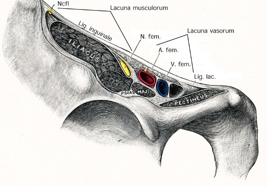
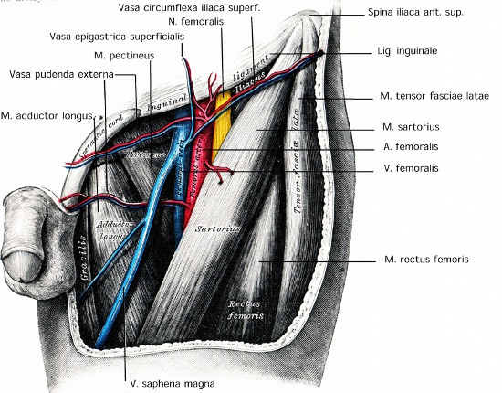

You are here: Urology Textbook > Anatomy > Groin
Anatomy of the Groin
Superficial Structures of the Groin
The fascia lata is the deep fascia of the thigh and encloses the muscles and forms the outer limit of the fascial compartments. Below the inguinal ligament, the saphenous opening (latin: hiatus saphenus) enables superfical vessels to run to/from the femoral vessels [Fig. superficial structure of the groin]:
- Lateral cutaneous nerve of the thigh (latin: N. cutaneous femoris lateralis) (1)
- Rami femoralis of the genitofemoral nerve (2)
- Accessory saphenous vein (V. saphena accessoria) (3)
- Great saphenous vein (latin: V. saphena magna) (4)
- External pudendal vessel (artery and vein) (5)
- Superficial epigastric vessels (artery and vein) (7)
- Superficial iliac circumflex vessel (artery and vein) (8 )
 |
Deep Compartments of the Groin and Inguinal Ligament
The inguinal ligament runs from anterior superior iliac spine (lateral) to the pubic tubercle (medial). The inguinal ligament is attached cranially (and formed) to the external abdominal oblique aponeurosis. The ligament is attached caudally and continuous with the fascia lata of the thigh. Several major structures passs under the inguinal ligament on theirs way to the thigh [Fig. inguinal ligament], from lateral to medial:
- Muscular lacuna (latin: lacuna musculorum): lateral compartment under the inguinal ligament. The iliopectineus arc separates the muscular from the vascular lacuna.
- lateral cutaneous nerve of the thigh (latin: N. cutaneus femoris lateralis)
- iliopsoas muscle
- femoral nerve
- Vascular lacuna (latin: lacuna vasculorum):
- femoral branch of the genitofemoral nerve
- femoral artery
- femoral vein
- lymph vessels and lymph nodes (e.g. Cloquet node also named Rosenmüller node)
|  |
|  |
Deep groin anatomy: Fig. modified from Gray’s Anatomy, Lea and Febinger 1918, Philadelphia, USA. |
| Pelvic cavity anatomy | Index | Anatomy |
Index: 1–9 A B C D E F G H I J K L M N O P Q R S T U V W X Y Z
References
- Benninghoff 1993 BENNINGHOFF, A.:
- Makroskopische Anatomie, Embryologie und Histologie des
Menschen.
15. Auflage.
München; Wien; Baltimore : Urban und Schwarzenberg, 1993
 Deutsche Version: Anatomie der Leiste
Deutsche Version: Anatomie der Leiste